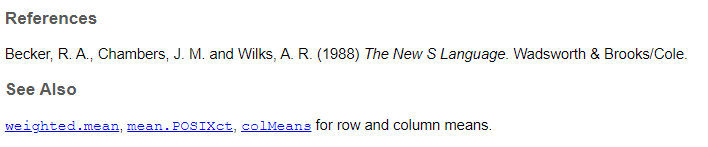

Code
# My First R script
#
24/2R is a flexible coding language that anyone can learn
I am taking a lot of this tutorial from the e-book “Hands on Programming in R” https://rstudio-education.github.io/hopr/
Isn’t R a language?
You may hear me speak of R in the third person. For example, I might say, “Tell R to do this” or “Tell R to do that”, but of course R can’t do anything; it is just a language. This way of speaking is shorthand for saying, “Tell your computer to do this by writing a command in the R language at the command line of your RStudio console.” Your computer, and not R, does the actual work.
Is this shorthand confusing and slightly lazy to use? Yes. Do a lot of people use it? Everyone I know–probably because it is so convenient.
Rstudio - integrated development environment
There is a very steep learning curve to R (or any coding language). You are likely to get frustrated when code doesn’t work. The first things you learn are probably things you could do easier and faster in Excel. So why bother?
OK, everyone, open Rstudio. Click on the new project button. A ‘project’ is basically an organized directory that has all of the data, code, and outputs for a particular work product. It’s especially useful once you start working on multiple files and reading in and out data and stuff, so it’s good to get in the habit of always working in a project. For now, choose a location for a folder that will contain all the work you want to do for this class. This folder is your “working directory”, meaning, the default location for loading inputs and writing outputs, scripts, etc.
Now let’s take a look at your RStudio Screen. Go over the different panes and how to navigate and customize.
This should be in your console:

Now go to File –> new file –> R script.
This will be your first R script. You will type things in the script, then transfer them to the console to run them. You can technically type directly into the console, but then you can’t save them, and that’s bad, so get into the habit of writing everything in your script.
From your script, you can hit the ‘Run’ icon in the top right corner to move a line of code from your script to your console.
You can also hit ctrl+enter to do the same thing.
Highlight multiple lines of code to run more than one thing at once.
The “source” button at the top of the script runs the entire script at once without printing all the output. This is useful of you have a script that is mostly setup stuff or homemade functions.
You will notice that in the console all the lines of code you run start with a >. If you have multiple lines of code strung together, there will be + at the start of the new lines until the end of the code. In an R script, you can break your code up into lines to make it all fit on your screen, so long as the parentheses line up.
The output does not start with a carrot or plus sign. (explain the brackets)
Now your turn!
24/2 in your scriptClick below for the answer when you are done!
# My First R script
#
24/2The joy of coding is that you can quickly to a lot of things at once. So, if I had a dataset with temperatures in Fahrenheit that I want to convert to Celsius, we can use R to do that all at once.
Let’s say our list of temperatures are: 72, 69, 57, 58, 71, 64, 65, 70, 59
We can use R like a calculator to convert each of these numbers
(72-32)*5/9[1] 22.22222(69-32)*5/9[1] 20.55556(57-32)*5/9[1] 13.88889(58-32)*5/9[1] 14.44444(71-32)*5/9[1] 21.66667(64-32)*5/9[1] 17.77778(65-32)*5/9[1] 18.33333(70-32)*5/9[1] 21.11111(59-32)*5/9[1] 15But that’s tedious. Instead, we can clump these numbers together into a vector and assign it to a variable.
Let’s call our vector “temps”
temps <- c(72, 69, 57, 58, 71, 64, 65, 70, 59)
temps[1] 72 69 57 58 71 64 65 70 59The <- is called the “assignment operator”. You can also use = to do the same thing. The c is short for “concatenate”, which means “stick all these things together”. We now have an object temps that is a vector of values. Type “temps” into your console.
We can then perform operations on the whole vector of values at once. For example
(temps-32)*5/9[1] 22.22222 20.55556 13.88889 14.44444 21.66667 17.77778 18.33333 21.11111
[9] 15.00000If we want to save that output, we need to assign it to a new variable
temps_C <- (temps-32)*5/9Note that this doesn’t give you any output, it just assigns a value to temps_C. If we want to see what temps_C is, we need to print it out.
temps_C[1] 22.22222 20.55556 13.88889 14.44444 21.66667 17.77778 18.33333 21.11111
[9] 15.00000If you want to print it as you make the assignment, you can put parentheses around it.
(temps_C2 <- temps_C*2)[1] 44.44444 41.11111 27.77778 28.88889 43.33333 35.55556 36.66667 42.22222
[9] 30.00000You’ll also notice that in the Environment tab in your Rstudio window you should now have temps and temps_C. You can click on them to see them.
Convert these numbers from miles per hour to meters per second. (use assignment)
21, 25, 100, 50, 36, 72, 15
Click below for the answer when you are done.
#the variable "mph" will be assigned the value of a vector of all our numbers
mph <- c(21, 25, 100, 50, 36, 72, 15)
#to convert mph to mps, divide by 2.237
mps <- mph/2.237
#now print the output
mpsWe can call temps and temps_C objects. Specifically, they are numeric vectors. Let’s go through some different types of objects.
Scalars - single value
Vectors - list if values (one dimensional)
Matrices - values in rows and columns, all the same type (two dimensional)
Arrays - multiple matrices stacked up (three-dimensional)
Data Frames - Data of different types in rows and columns, where all columns are the same length and all rows are the same width.
Lists - data of different types and different lengths in rows and columns.
numeric - Numbers (duh), these can be integers, real numbers, etc.
character - Any sequence of letters and numbers
logical - TRUE/FALSE (always in all caps)
factor - Categorical variables that take a limited set of values. May be ordered (like water year types), or unordered (like families of fishes)
date/time classes (giant can of worms)
Using class and str to get info about objects. also View and head.
Functions are little sequences of code that do something useful. There are lots of built-in functions, plus you can define your own functions when you get a little more practice.
The basic structure is:
function(arguments)
where “arguments” are the inputs to your function.
The parentheses are the “trigger” that tells R to run the function. Typing the name of the function without the parentheses prints the code in the console. And you can write your own when you get good.
#when we calculated the sum of 1 +1, that was a function
sum(1+1)[1] 2sumfunction (..., na.rm = FALSE) .Primitive("sum")[1] 2.5Notice that as you start typing the function, a box pops up in RStudio that prompts you with the arguments you might want to use. Also note that we have to “feed” the mean function a vector of values with c (concatenate) in front of it.
See if you can use use these functions
mean - calculate the mean of 23, 24, 15, 12, 53, 23, 1, 45
sum - calculate the sum of all numbers below 50
: between the first and last number.abs (absolute value)
log - default is ln, not log10
round - can specify decimal places
exp (exponent)
Click below for the answers when you’re done!
mean(c(23, 24, 15, 12, 53, 23, 1, 45))
sum(c(1:50))
abs(c(-1, 2, -10, 5))
#natural log
log(100)
#log base 10
log(100, base = 10)
#the default for round is no decimal points
round(5.345673)
#but you can specify the number of decimal points with the second argument
round(5.345673, digits = 2)
#this is the same as e^20
exp(20)
exp(log(10))The real benefit of R is that it is open-source, and tons and tons of people have developed ‘expansion packs’ for R. You can go a very long way with just the built-in R functions, but many people have developed slightly different ways of doing things, easier methods, and more advanced things.
Let’s go over to the R website and talk packages - https://www.r-project.org/
We had everyone install the tidyverse packages before getting started. This is actually a set of packages that all work together to make code a little more intuitive. Let’s go over to the “Packages” tab in RStudio and check them out.
dplyr - data manipulation
lubridate - dates and times
ggplot2 - graphics
tidyr - more data manipulation
forcats - working with categorical variables (factors)
readr - importing data from spreadsheets
stringr - working with character strings
tibble - nicer checking and formatting for tables and data frames
You’ll notice that besides the tidyverse, there are a number of other packages in this tab that you didn’t install - they came along with base R.
When you want to install or update packages, you can use the install.packages command, or the GUI in RStudio. This command reaches out to (incomplete). You only have to do this once. However, at the start of every R session you will need to load the package into your environment using the library command. This is usually done at the top of your script.
Let’s check out the documentation
#check out documentation
?readrClick on the index, then one of the vignettes - those are very useful!
After you’ve loaded a package, you might get some warnings about conflicted packages. These are different functions with the same name in two different packages. Mostly it isn’t a problem, but sometimes you’ll have to specify which function you mean.
Specify which you want with package::function
If you really want the base version instead of the one from a package, you can use the exclude argument.
Let’s try using a function that is in a package. glimpse is an simple function that tells you about a data frame. R has a number of built-in data sets that you can play with, and one is mtcars. It’s just a table of different makes and models of cars and their stats.
#The View function is built in.
View(mtcars)#the "glimpse" function is in the dplyr package. It's part of the tidyverse set of packages. You should have installed it already
glimpse(mtcars)Error in glimpse(mtcars): could not find function "glimpse"Even though you installed it, you still need to load it into your workspace using the library command.
Rows: 32
Columns: 11
$ mpg <dbl> 21.0, 21.0, 22.8, 21.4, 18.7, 18.1, 14.3, 24.4, 22.8, 19.2, 17.8,…
$ cyl <dbl> 6, 6, 4, 6, 8, 6, 8, 4, 4, 6, 6, 8, 8, 8, 8, 8, 8, 4, 4, 4, 4, 8,…
$ disp <dbl> 160.0, 160.0, 108.0, 258.0, 360.0, 225.0, 360.0, 146.7, 140.8, 16…
$ hp <dbl> 110, 110, 93, 110, 175, 105, 245, 62, 95, 123, 123, 180, 180, 180…
$ drat <dbl> 3.90, 3.90, 3.85, 3.08, 3.15, 2.76, 3.21, 3.69, 3.92, 3.92, 3.92,…
$ wt <dbl> 2.620, 2.875, 2.320, 3.215, 3.440, 3.460, 3.570, 3.190, 3.150, 3.…
$ qsec <dbl> 16.46, 17.02, 18.61, 19.44, 17.02, 20.22, 15.84, 20.00, 22.90, 18…
$ vs <dbl> 0, 0, 1, 1, 0, 1, 0, 1, 1, 1, 1, 0, 0, 0, 0, 0, 0, 1, 1, 1, 1, 0,…
$ am <dbl> 1, 1, 1, 0, 0, 0, 0, 0, 0, 0, 0, 0, 0, 0, 0, 0, 0, 1, 1, 1, 0, 0,…
$ gear <dbl> 4, 4, 4, 3, 3, 3, 3, 4, 4, 4, 4, 3, 3, 3, 3, 3, 3, 4, 4, 4, 3, 3,…
$ carb <dbl> 4, 4, 1, 1, 2, 1, 4, 2, 2, 4, 4, 3, 3, 3, 4, 4, 4, 1, 2, 1, 1, 2,…Now go to the documentation for dplyr and look through the “Introduction to dplyr” vignette. Take 10 mins and see if you try out some of the examples. We’ll be using a lot of these dplyr functions later in the class.
?dplyr
vignette("dplyr") One of the most frustrating parts of coding is errors. Your computer is very good at doing exactly what you tell it to, but that might not be what you want.
dates = c("Monday", "Tuesday", "Wednesday")
date[1]Error in date[1]: object of type 'closure' is not subsettableThis is one of my least favorite error messages. What the heck does that even mean?
It turns out we accidentally typed date instead of dates, and date is a reserved term in R, so it was trying to subset a word that designates a data type and everyone was confused. But don’t worry! It gets worse.
Everyone has trouble interpreting error messages at first. Fortunately, error messages are improving, and you will get better at understanding them.
Another thing to know is that not all red text is errors. Some are warnings. Don’t worry about what this code does for now, just see what the output looks like.
mtcars[1,1] = NA
ggplot(mtcars, aes(x = mpg, y = hp))+ geom_point()+ geom_smooth()`geom_smooth()` using method = 'loess' and formula = 'y ~ x'Warning: Removed 1 row containing non-finite outside the scale range
(`stat_smooth()`).Warning: Removed 1 row containing missing values or values outside the scale range
(`geom_point()`).
Everything still ran, but it gave to a warning to let you know something did not go as planned.
We also sometimes get messages, which are usually not even red.
#don't worry about what this code does for now, just notice that we get a message telling you what it decided to use for the smoothing term.
ggplot(mtcars, aes(x = mpg, y = hp))+ geom_point()+ geom_smooth()`geom_smooth()` using method = 'loess' and formula = 'y ~ x'
The first thing to learn, is how to read the documentation for a function.
?meanThe documentation has a few standard parts
function and package in curly brackets at top
Title
Description- Frequently not all that helpful, but sometimes useful
Usage (Function and arguments)

Arguments - description of what all the arguments should contain

Value - output
References - articles or more info
See Also - similar functions or functions you might want if you want this one

Examples - THE MOST USEFUL PART!

Sometimes there are other parts, including more details on statistical methods, but these are the basics.
Look up the documentation for these functions and see if you can run the examples.
rnorm
aov
sample
Click below to see the answer when you are done.
?rnorm
#rnorm generates a random number or numbers from a normal distribution. You can specify the mean and standard deviation
#this generates 20 random numbers with a mean of 10 and a standard deviation of 3
rnorm(20, mean = 10, sd =3)
?aov
#aov runs an ANOVA (analysis of variance), which tests for differences between groups
#the examples use the "npk" dataset which is built into R
aov(yield ~ block + N * P + K, npk)
?sample
#this function takes a subsample of a larger set of number of a specified size
x <- 1:12
# a random permutation
sample(x)
# bootstrap resampling -- only if length(x) > 1 !
sample(x, replace = TRUE)How to save your workspace image.
save.image()
#also little save icon on environmentHow to clear your workspace.
2.3.1 Comments
Another good habit to start early is commenting your code. Comments are indicated by hashtags
#. They are parts of your script that don’t do anything, just give you information about what you intended in your code and why you did what you did. RStudio helpfully color-codes them for you.For example: